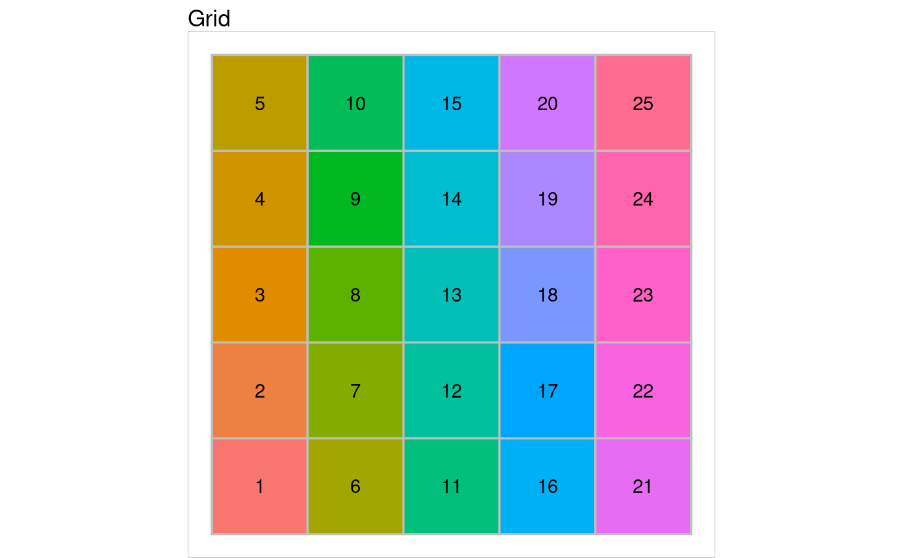
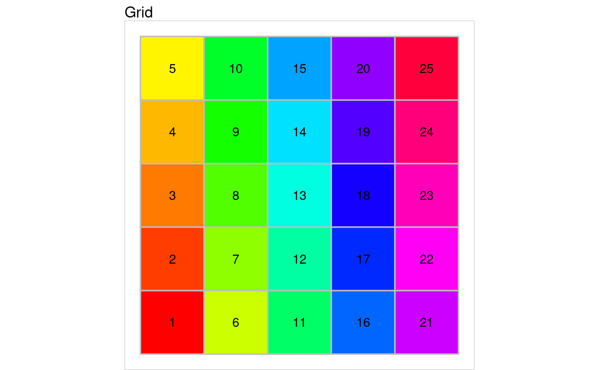

Methods for the result of initGrid
(myGrid object)
myGrid object
Further arguments to the plot function.
myGrid object
Whether the cluster names must be printed in center of
the grid or not. Default to TRUE (names not displayed).
If show.names = TRUE, values of the names to
display. Default to the cluster number.
The myGrid class has the following entries:
coord 2-column matrix with x and y coordinates of the grid
units
topo topology of the grid;
dim dimensions of the grid (width corresponds to x
coordinates)
dist.type distance type that defines the topology of the
grid.
During plotting, the color filling process uses the coordinates of the object
x included in x$coord.
initGrid to define a myGrid class object.
# creating grid
a.grid <- initGrid(dimension=c(5,5), topo="square", dist.type="maximum")
# plotting grid
# without any color specification
plot(a.grid)

# generating colors from rainbow() function
my.colors <- grDevices::rainbow(5*5)
plot(a.grid) + ggplot2::scale_fill_manual(values = my.colors)
